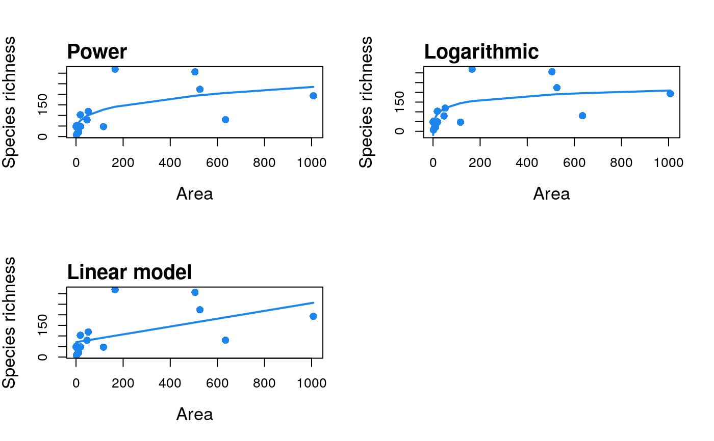

Creates a fit collection of SAR model fits, which can then be
plotted using plot.sars.
sar_multi(data, obj = c("power", "powerR","epm1","epm2","p1","p2","loga","koba", "mmf","monod","negexpo","chapman","weibull3","asymp", "ratio","gompertz","weibull4","betap","heleg","linear"), normaTest = "lillie", homoTest = "cor.fitted",verb = TRUE)
| data | A dataset in the form of a dataframe with two columns: the first with island/site areas, and the second with the species richness of each island/site. |
|---|---|
| obj | A vector of model names. |
| normaTest | The test used to test the normality of the residuals of each model. Can be any of "lillie" (Lilliefors Kolmogorov-Smirnov test; the default), "shapiro" (Shapiro-Wilk test of normality), "kolmo" (Kolmogorov-Smirnov test), or "none" (no residuals normality test is undertaken). |
| homoTest | The test used to check for homogeneity of the residuals of each model. Can be any of "cor.fitted" (a correlation of the residuals with the model fitted values; the default), "cor.area" (a correlation of the residuals with the area values), or "none" (no residuals homogeneity test is undertaken). |
| verb | verbose (default: |
A list of class 'sars' with n elements, corresponding to the n individual SAR model fits.
The sar_models() function can be used to bring up a list of
the 20 model names. display_sars_models() generates a table of the
20 models with model information.
data(galap) # construct a fit_collection object of 3 SAR model fits fit2 <- sar_multi(galap, obj = c("power", "loga", "linear"))#> #> Now attempting to fit the 3 SAR models: #> #> ── multi_sars ────────────────────────────────────────────────────────────────────────────── multi-model SAR ── #> → power : ✔ #> → loga : ✔ #> → linear : ✔plot(fit2)# construct a fit_collection object of all 20 SAR model fits fit3 <- sar_multi(galap)#> #> Now attempting to fit the 20 SAR models: #> #> ── multi_sars ────────────────────────────────────────────────────────────────────────────── multi-model SAR ── #> → power : ✔ #> → powerR : ✔ #> → epm1 : ✔#> #>#> → epm2 : ✔ #> → p1 : ✔ #> → p2 : ✔ #> → loga : ✔ #> → koba : ✔ #> → mmf : ✔ #> → monod : ✔ #> → negexpo : ✔ #> → chapman : Warning: could not compute parameters statistics #> → weibull3 : ✔ #> → asymp : ✔ #> → ratio : ✔ #> → gompertz : ✔ #> → weibull4 : ✔ #> → betap : ✔ #> → heleg : ✔ #> → linear : ✔